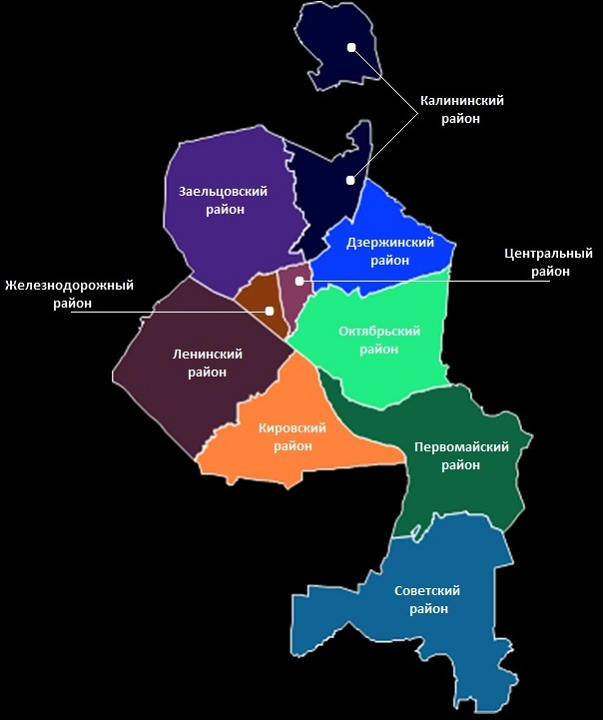

Дзержинский район
Один из десяти муниципальных районов Новосибирска, расположен на правом берегу Оби.
Население района составляет около 11 процентов общего населения города. По этому показателю район находится на пятом месте.
В Дзержинском районе 220 улиц и переулков, среди которых основными являются: проспект Дзержинского, Авиастроителей, Кошурникова, Бориса Богаткова, Учительская.
В
30-е годы XX века было принято решение о строительстве в Новосибирске машиностроительного завода и трикотажного комбината. Строительные площадки «Сибмашстрой» и «Трикотажстрой», появившиеся на окраине города, стали основой будущего района.
Район основан
1 октября 1933 года.
В
1980 году от него был отделён Калининский район, и Дзержинский район приобрёл современное очертание.
Железнодорожный район
Cтарейший в Новосибирске. Первые жилые дома появились в
1893 году в связи со строительством Восточно-Сибирского участка Сибирской железной дороги.
До
1932 года район именовался Вокзальной частью города. В
августе 1936 года решением Новосибирского городского совета рабочих, крестьянских и красноармейских депутатов был образован Кагановический район. Район был переименован в Железнодорожный в
1957 году.
В районе находится немало высших учебных заведений: Консерватория им. М. И. Глинки, Академия водного транспорта и институт искусств, Юридический институт (филиал) Томского государственного университета, театральный институт, Новосибирский гуманитарный институт, средние специальные учебные заведения: кооперативный техникум, финансово-банковский колледж, медицинское училище и единственная за Уралом средняя специальная музыкальная школа-колледж.
Система дошкольного и среднего образования включает в себя 12 муниципальных средних школ (в том числе вспомогательную школу, школу-интернат для глухих), школу Западно-Сибирской железной дороги, 9 муниципальных подростковых клубов, образующих 2 центра, 16 детских дошкольных учреждений.
В территориальную систему здравоохранения входят 2 больницы (крупнейшая из них — Дорожная клиническая больница и муниципальная психиатрическая), объединенная муниципальная поликлиника, два отделения дорожной поликлиники, 3 диспансера, консультативно-диагностический центр «Ювентус», клинико-диагностический центр им. А. П. Гумилевского и женская консультация, центр реабилитации детей-инвалидов, областной сурдологический центр, городская лаборатория иммунологии и СПИДа. На базе Дорожной клинической больницы действует нейрохирургический центр.
Заельцовский район
Расположен в северо-западной части Новосибирска. Территория начала застраиваться
в начале ХХ века. Первые улицы одноэтажных домов появились вблизи строящихся военно-сухарного завода, мясохолодильника, кожевенных производств.
Постановлением Новосибирского облисполкома от
25 марта 1940 года образован Заельцовский район.
По территории проходит более 190 улиц и переулков. Общая протяженность улиц – 162 км.
Основные улицы: Дуси Ковальчук, Красный проспект, Кропоткина, Жуковского
Калининский район
Образован из части территории Дзержинского района согласно Указу Президиума Верховного Совета СССР от
20 октября 1980 года, в связи с планировкой строительства крупных жилых массивов в северной части города. В
декабре 1997 года в состав района включен рабочий посёлок Пашино, который стал своеобразным анклавом города.
За годы существования района построены новые большие микрорайоны: «Снегири», «Родники», «Юбилейный», «Плехановский».
На территории района зарегистрировано 2950 предприятий, в том числе 15 крупных и средних промышленных предприятий. Бесспорный лидер среди промышленных предприятий района — ОАО «Новосибирский завод химконцентратов» (НЗХК).
Старейшие предприятия района: ФГУП Новосибирский механический завод «Искра», ОАО «Промстальконструкция», ФГУП Производственное объединение «Север», ПО «Электрон».
Кировский район
Один из административных районов левобережной части города Новосибирска.
До
1930 года — Бугринский район Новосибирского округа. Центр — село Бугры, бывшее самым крупным среди окрестных селений.
20 октября 1930 года — Постановлением Президиума ВЦИК образован Заобский район. В городскую черту были включены населённые пункты, входившие в старинную Кривощёковскую слободу.
2 декабря 1934 года — Постановлением Президиума Новосибирского городского Совета, Заобский административный район стал Кировским. Переименование произошло после сообщения об убийстве С.М. Кирова.
9 декабря 1970 года — Указом Президиума Верховного Совета РСФСР создан Кировский район в настоящих границах в результате разделения левобережной части города на два района.
Ленинский район
Третий по величине и самый населённый район Новосибирска. Расположен на левом берегу Оби.
С правобережной частью города Ленинский район соединяет железнодорожный мост через Обь и три автодорожных моста: Димитровский, Коммунальный и Бугринский.
Формирование городского района в левобережье началось в годы первых пятилеток. Строительство первенца пятилетки — завода «Сибкомбайн» (ныне «Сибсельмаш»), начатое в
январе 1930 года, дало импульс созданию промышленного района левобережной части города.
20 октября 1930 года Постановлением Президиума ВЦИК своим постановлением принимает решение об образовании Заобского района, с центром в посёлке Кривощёково. В городскую черту были включены населённые пункты, входившие в старинную Кривощёковскую слободу.
2 декабря 1934 года район был переименован в Кировский.
9 декабря 1970 года Указом Президиума Верховного Совета РСФСР левобережная часть города была разделена на два административных района — Кировский и Ленинский.
Октябрьский район
Расположен на правом берегу Оби.
Район основан в
1929 году. До этого назывался Закаменским (так как относительно центральной части располагался за речкой Каменкой). Это одна из старейших частей города Новосибирска.
Основные улицы: Большевистская, Выборная, Никитина, Кирова, Восход, Бориса Богаткова.
Первомайский район
Расположен в южной части г. Новосибирска на территории водораздела рек Оби и Ини. Cредняя часть района занята городскими лесами.
Возникновение Первомайского района связано с образованием Инского железнодорожного узла самого крупного на Западно-Сибирской железной дороге. В
1929 году началось сооружение станции Эйхе — начального пункта железнодорожной линии Новосибирск-Ленинск-Кузнецкий.
29 сентября 1933 года президиум Новосибирского горисполкома принял решение о строительстве поселка Эйхе, образованный Эйховский район в
1938 году был переименован в Первомайский район города Новосибирска, а станция Эйхе — на станцию Инская Томской железной дороги.
В
1938 году район был переименован в Первомайский.
Основу экономики района составляют промышленность, транспорт, строительство. В районе находится крупный железнодорожный узел с развитой сетью предприятий железнодорожного транспорта.
Советский район
Один из административных районов города Новосибирска, иногда именуется также, по своей важнейшей части, Новосибирский Академгородок.
Советский район находится на юге от центральной части города на обоих берегах реки Обь и Обского моря.
Важнейшие улицы — Проспект Лаврентьева, Морской Проспект, Приморская, Русская.
Образован район в связи с созданием Сибирского отделения АН СССР и Новосибирского научного центра в
1958 году решением исполнительного комитета Новосибирского городского Совета депутатов трудящихся № 391 от
16 апреля 1958 года в соответствии с Указом Президиума Верховного Совета РСФСР № 751/16 от
26 марта 1958 года.
В состав нового района были включены: рабочий поселок Чемский (состоял из правобережного и левобережного поселков ОбьГЭС), поселок Матвеевка, Благовещенка, Березовый лог (Чербусы), Речкуновка, Юный Ленинец, поселки Новосибирской государственной опытной сельскохозяйственной станции, элитного хозяйства, железнодорожного разъезда №2, казармы 31 км, деревни Нижняя Ельцовка и Огурцово.
Центральный район
Один из административных районов города Новосибирска.
В 1930-е годы были образованы административные районы в правобережной части города Новосибирска. Территория центральной части входила в состав Дзержинского и Октябрьского районов.
19 февраля 1940 года Президиум Верховного Совета РСФСР утвердил Постановление Президиума Новосибирского облисполкома об образовании в г. Новосибирске Центрального района.
15 июля 1953 года Президиум Верховного Совета РСФСР своим указом упразднил Ипподромский район в городе Новосибирске, передав его территорию в состав Центрального района. В настоящее время граница района проходит по ул. Советская, Линейная, Селезнёва и реке Каменка.